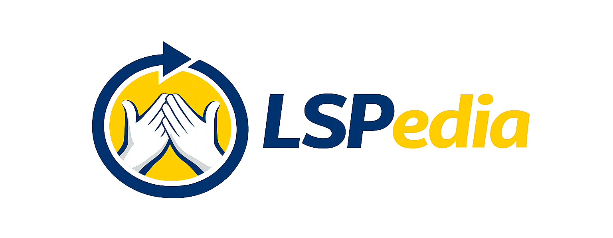
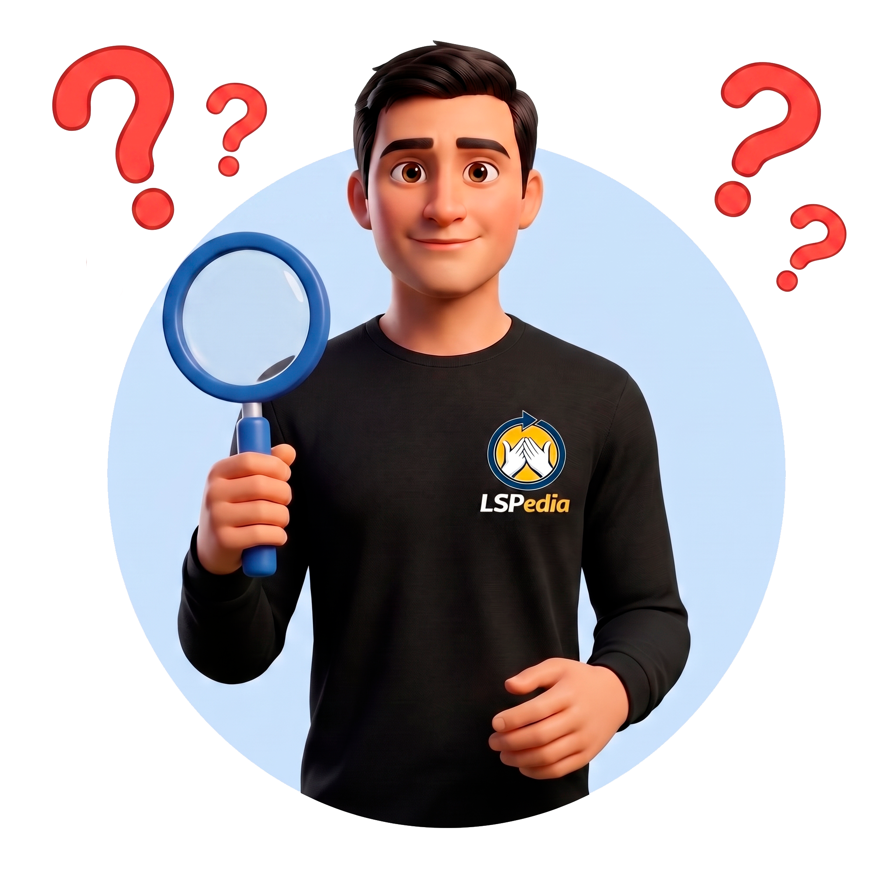

Señas a texto y voz
Haz señas ante la cámara para convertirlas en texto y escucharlas en voz alta.

Desarrollado con corazón
Un momento, estamos trayendo el contenido.
🔎 Busca una palabra y entiende su significado con videos en Lengua de Señas.
🧏🏻♂️🧏🏻♀️ Para personas sordas y para quienes quieren comunicarse mejor con ellas.
ℹ️ Diccionario de apoyo, no un curso de LSP.
Las palabras en español sirven como referencia para facilitar las búsquedas.
Las señas representan conceptos, no solo palabras.
Las variantes regionales enriquecen la Lengua de señas.
No basta aprender vocabulario, también requiere contacto con personas sordas.

Encuentra más videos en nuestras redes
Haz señas ante la cámara para convertirlas en texto y escucharlas en voz alta.
Escuchando el ambiente…
📢 Consejos para captar mejor el audio:
Para usar los subtítulos en tiempo real, abre esta página en Google Chrome (en Android o en tu computadora). Otros navegadores como Safari o Firefox todavía no soportan esta función correctamente.
Elige el nivel y el modo de juego para tu ronda de práctica.
Nivel
Modo de juego
Revisión de respuestas
Elige el nivel para practicar completando palabras con la letra que falta.
Nivel
Elige el nivel para practicar uniendo cada imagen con su palabra.
Nivel
🖼️ Imágenes
🔤 Palabras
Revisión de respuestas
🔊👄 Fonética
✏️ Grafía
📚 Ejemplos de palabras
Haz señas ante la cámara para convertirlas en texto y escucharlas en voz alta.
Algunas personas podrían pensar que LSPedia tiene "viveza", que se aprovecha de la comunidad sorda haciendo apropiación cultural y que luego usa eso para enseñarle señas a personas oyentes.
❌ Eso no es cierto de ninguna manera. ¿Por qué? Sabemos que la comunidad sorda tiene el derecho de enseñar su propio idioma, la lengua de señas. Conocemos a personas sordas cuya labor es ayudar a otros sordos: algunos trabajan como intérpretes 🧏, otros como modelos lingüísticos, y otros como profesores que dan clases porque han sido capacitados y formados para eso — y eso lo aplaudimos 👏.
LSPedia no es un enemigo, al contrario, busca ayudar 🤝. Sabemos que la información disponible está hablada en español, y para ayudar a los sordos, una persona oyente que conozca el español y la lengua de señas puede aportar interpretando y haciendo disponibles esos videos 🎥.
El sordo, al ver los videos, recibe una ayuda real, puede entenderlos. Después, cuando vea información en internet o en publicaciones, al encontrarse con esas palabras, ya podrá entenderlas, y eso le será de gran ayuda en su trabajo y en sus distintas labores 💼.
Tú puedes ver en internet, en tu computadora 💻 o en tu celular 📱 muchísima información: libros 📚, noticias 📰, redes sociales, Facebook, WhatsApp, YouTube y mucho más. En Perú toda esa información está en español y hablada.
Te pregunto: ¿para una persona sorda es fácil acceder a esa información? La verdad, no 🚫, porque una persona sorda tiene como idioma materno la lengua de señas. Esa información está hablada, y el sordo ve una multitud de palabras escritas que le resulta difícil entender. Esto es como un muro 🧱 que impide la accesibilidad. Es un problema real.
Por eso nació LSPedia. ✨ ¿Qué es? Es un diccionario 📖 al que puedes acceder mediante un enlace web 🔗. Le das clic, lo abres, y es una web visual. Ahí ves el significado de las palabras con ejemplos, todo en video 🎬 y en lengua de señas. Puedes aprenderlo, y es como descubrir algo nuevo 💡.
Esos videos están acompañados de ilustraciones 🖼️ que ayudan a imaginar y llegar a tener un mejor entendimiento. Es una sensación de ayuda real que impulsa tu progreso personal al tener más conocimiento 📈.
Esto está disponible para que cualquier persona sorda aprenda palabras nuevas que le serán útiles, y así la información mencionada al principio puede ser accesible para ti. ✅
Para producir LSPedia se ha trabajado en varias cosas: el diseño para web y móviles 🖥️📱, la grabación y la edición de videos 🎞️. Es un trabajo grande con muchas tareas distintas, y eso implica gastos 💸.
¿Cómo se está financiando? De manera personal, con fondos propios 👤. ¿Alguna organización o el Estado está aportando dinero? No. Quizás en el futuro, tal vez.
LSPedia sí necesita apoyo. ¿Tú quieres hacerlo? 🙌 Muy bien, muchas gracias. ¿Cómo lo harías? De varias maneras. Aquí te explico cinco 👇
Gracias por tu apoyo 🙏, porque gracias a eso LSPedia sigue progresando, y la inclusión y el aprendizaje de los sordos siguen impulsándose. 🤟💙